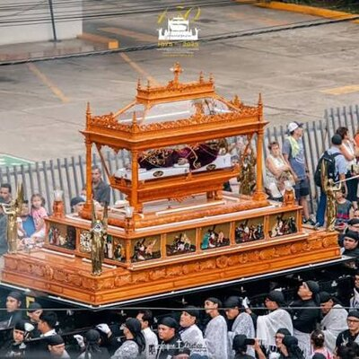

✝️ SEMANA SANTA
Sonsonate · El Salvador
Elegí tu procesión
Jesús Nazareno
Procesión de Lunes a Viernes Santo · 21 grupos
→

⚱️ Santo Entierro
Viernes Santo (noche) · 22 grupos
→
Rastreo en vivo de cargadas · ubicación · horarios
Acceso administrador